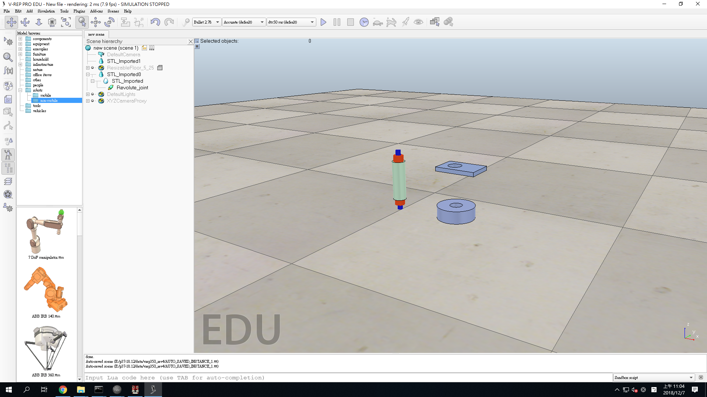

CADP 第四組 期末分組網站
Home
Site Map
reveal
blog
Introduction
Onshape
支架
傳動
連接
馬達
配件
組合圖
FeatureScript
列印件六角填充
六角填充外力版本
參考資料
Fusion 360
支架 - Fusion 360
傳動 - Fusion 360
連接 - Fusion 360
馬達 - Fusion 360
組合圖 - Fusion 360
V-rep
Test-1
Test-2
整理大綱
3D列印機First-test
Experience
Week11
Week12
Week13
Week14
Week15
Week16
Week17
Final Report
PDF
如何編輯PDF
各周組員工作紀錄投影片
Attend＆Absence
V-rep <<
Previous
Next
>> Test-2
Test-1
Try to combine the Parts and export it from Onshape. (12/7

Part 1
&
Part 2
&
Part 3
參考
V-rep <<
Previous
Next
>> Test-2